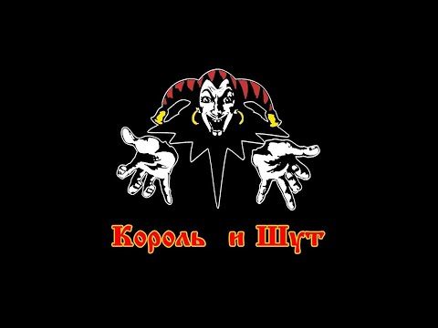

Добро пожаловать на сайт,
посвященный легендарной группе "Король и Шут"

Король и Шут, часто сокращаемые до «КиШ» — лучшие сказители мрачных сказок России, способные перещеголять богатством фольклора даже Братьев Гримм (не путать с Братьями Грим, они появились чуть позже). Будучи представителями довольно нишевого и непопулярного жанра, они умудрились вытащить его на свет божий и стать по-настоящему народной группой. А вот как именно, сейчас и расскажем.